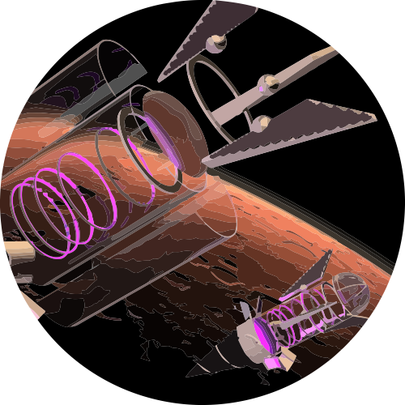
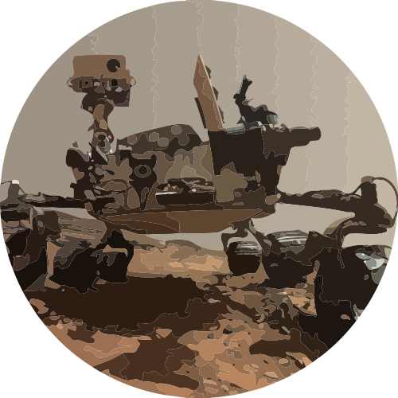

SciencePayload from Genesis1:11 TM
Preferred Instrument
Operating Time & Free
Instruments
Spacecraft
Results
Compare
Name of the project
Spacecraft

Genesis1:11 Rocket Capsule

Curiosity Mars Rover
Science Payload (Kg)
{{spacecraft.science}}
Energy Supply (W/h)
{{spacecraft.energy}}
Research's priority
Collecting data from huge area
Punctuallity
Next
Back
My Instruments
{{instrument.name}}
Instruments of the Community
{{instrument.name}}
Next
Name
{{spacecraft.name}}
Science Payload (Kg)
{{spacecraft.science}}
Energy Supply (W/h)
{{spacecraft.energy}}
Travel Time to the Planet (years)
{{spacecraft.travel}}
Research's priority
{{spacecraft.research}}
Name
Weight
Electricity Wh
Total amount
Sample preparation
Meassurment
Resolution
Chemicals (years)
Instruments (working hours)
{{instrument.name}}
{{instrument.weight}}
{{instrument.energy}}
{{instrument.amounts}}
{{instrument.preparation}}
{{instrument.meassurment}}
{{instrument.resolution}}
{{instrument.chemicals}}
{{instrument.working}}
{{realCompare.name}}
{{realCompare.weight}}
{{realCompare.energy}}
{{realCompare.amounts}}
{{realCompare.preparation}}
{{realCompare.meassurment}}
{{realCompare.resolution}}
{{realCompare.chemicals}}
{{realCompare.working}}
Name
Weight
Electricity Wh
Total amount
Sample preparation
Meassurment
Resolution
Chemicals (years)
Instruments (working hours)
{{instrument.name}}
{{instrument.weight}}
{{instrument.energy}}
{{instrument.amounts}}
{{instrument.preparation}}
{{instrument.meassurment}}
{{instrument.resolution}}
{{instrument.chemicals}}
{{instrument.working}}
Name
Probability Weight
Probability Time
Probability Energy
{{compare.name}}
{{compare.pweight}}
{{compare.penergy}}
{{compare.ptime}}
Name
Samples (number)
Time (years)
Free Weight
{{operating.name}}
{{operating.time}}
{{operating.sample}}
{{operating.free}}
Preferred instrument in accordance with {{spacecraft.research}} is
{{instrumentSelected}}
{{instrument}}
Exceeds weight limit
The instrument is heavier than allowed. Allowable payload: {{spacecraft.science}} kg
Back